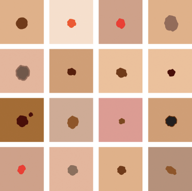

About Us
this web-app helps you quickly analyze a skin lesion. It works in a similar way to a textbook, where you might find an image that looks like your skin problem. But while looking this up in a textbook would take a lot of time, this web-app does it in an instant!
this web-app is designed to be more than a one-disease app. We have 12,000 diagnosed images and growing. We are beginning trials to review our accuracy as a diagnostic aid for skin cancer lesions (melanoma).
Our aim is to provide a simple, inexpensive software system to identify potentially all types of skin lesions using a web-app-based platform.
Our system's algorithm is unique among smartphone applications, using sophisticated CBIR (content based image recognition) technology to discriminate skin-lesion types.
We are currently expanding our database and algorithm to include basal and squamous cell carcinomas in addition to amelanotic melanomas. As our database grows, this web-app will recognize more and more skin diseases.
How it Works
The Algorithm
The algorithm works a bit like Google's image search, only ours is specifically designed for skin images. Whereas Google's image search surveys the whole internet, our algorithm uses carefully curated medical images.
The Database

Unlike a typical published textbook or atlas, our reference image library is an ever-growing database of diagnosed images edited by our dermatologists.
Currently our database has 22,000 images of benign and malignant skin lesions for clinicians reviewing skin lesions for skin .